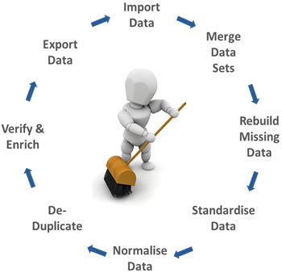

In this project, I used Python along with Pandas, Numpy, Seaborn, and Matplotlib to analyze a dataset of
16,715 video game records from 1983 to 2016. The goal was to understand video game sales patterns, considering factors
like release year, platform, genre, and critic/user scores. I focused on data cleaning, preprocessing, and exploratory
analysis to reveal insights. User profiles based on regions were explored, and statistical factors were measured using
hypothesis testing, specifically the t-test. The results offer practical suggestions for businesses in the video game
retail space, making data more approachable for strategic decisions.

In my World Freedom project, my primary focus was on exploratory data analysis (EDA) and insightful data visualization. I engaged
in a comprehensive examination of extensive datasets concerning global freedom metrics, employing pandas and numpy for data
manipulation. While I did not heavily emphasize data wrangling, I dedicated significant efforts to uncovering meaningful insights
through visual representations. Utilizing matplotlib and seaborn, I crafted compelling visuals that shed light on the intricate
relationships between human and economic freedom metrics. This project allowed me to delve into the nuanced aspects of global
freedom trends and identify regional leaders through the lens of insightful data exploration and visualization.

In the Google Play Store Data Cleaning and Preprocessing Project, my primary focus was on refining the dataset for optimal analysis. Concentrating on meticulous data cleaning and preprocessing techniques,
I systematically addressed missing values, handled duplicates, standardized data types, and identified outliers, ensuring the overall consistency of the dataset.
By leveraging the Pandas, NumPy, Matplotlib, Seaborn, and missingno libraries, I applied industry-standard practices to enhance the quality of the data.
This project emphasized a sequential examination of each column, aiming to produce a clean and well-structured dataset ready for in-depth analysis.
Through these data preparation steps, I aimed to eliminate impediments and pave the way for insightful exploration and visualization of Google Play Store app data
.

In this project, I gathered CO2 emissions data for all countries from 1990 to 2020, along with data on deaths directly caused by CO2 emissions-related pollution.
I conducted a thorough analysis and visualized the data to highlight the adverse effects that high-emitting countries have on economically weaker nations.
Utilizing advanced dashboarding techniques, including navigation buttons and forecast analysis, I created an interactive platform for exploring these impacts.

In this project, I developed a fully interactive dashboard report using dummy bank data.
The dashboard enables companies to drill down into the numbers and allocate resources for targeted advertising based on insights gained.
By leveraging Tableau features such as bins, quick table calculations, filters, and dashboard actions, I ensured the dashboard's full interactivity
and utility for business decision-making.
In this project, I analyzed census data from 2011, which included information on population per state, sex ratio, literacy rate, and growth.
Demonstrating the power of SQL for data analysis, I used various features such as aggregate functions, sub-queries, joins, and window functions
to uncover interesting observations about regional performance across the country. Additionally, I visualized these findings in Tableau to provide a clear and comprehensive view of the data.

In this project, I performed data cleaning on a housing dataset, which is a crucial initial step in any data analysis project.
By removing irrelevant data and standardizing the dataset, I facilitated the subsequent analysis processes.
Using various DDL and DML commands, along with wildcard functions, window functions, case statements, and self-joins,
I ensured the data was thoroughly cleaned and ready for analysis.
In this project, I created a sales dashboard for simple food delivery sales to demonstrate my Excel dashboarding skills.
Utilizing features like pivot tables, slicers, and various types of graphs, I provided an interactive and
informative platform for exploring sales data and trends.

In this project, I developed a stock market analyzer using Excel. By incorporating data validation and functions such as MATCH, INDEX, MIN, and MAX,
I created dropdowns for the top 10 companies listed on the S&P 500. This allowed users to select any two companies from the top 10
and analyze their trends over the past year through graphical and textual representations.